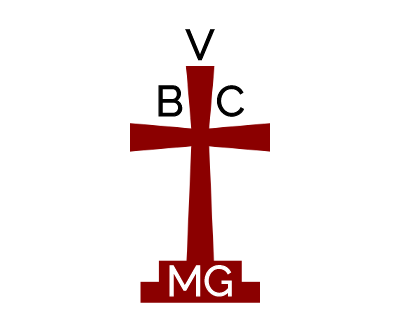

Victory Baptist Church
Sunday Morning
Join us Sunday mornings at 10:00 AM for Sunday School led by various members of the church.. There will be coffee and treats as well.
At 11:00 AM, join us for the main service led by Pastor Maupin.
Sunday Evening
6:00 PM on Sunday begins our evening service where Pastor Maupin will give another message, often building off of Sunday morning's message.